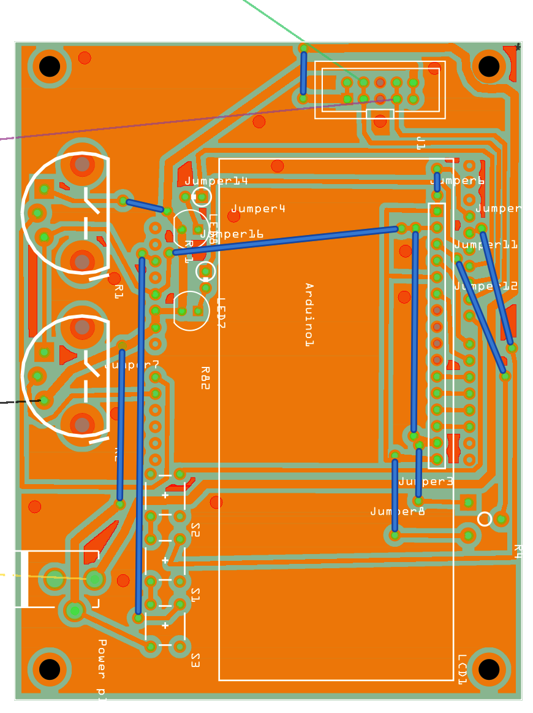
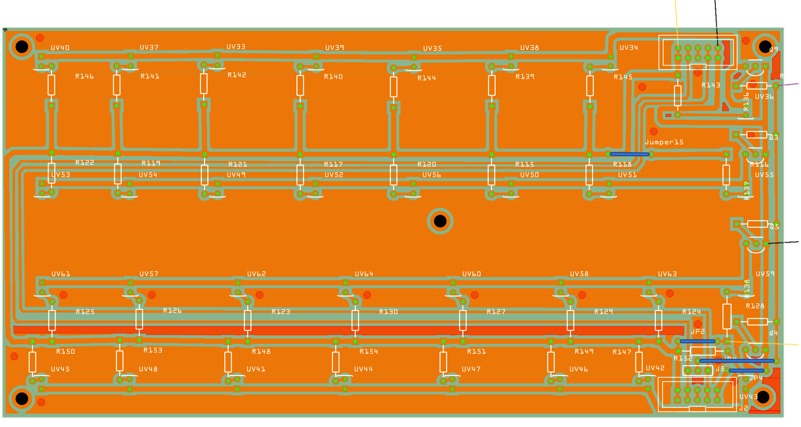

Detalhes.
Segue abaixo imagem da placa a ser gerada para criação da primeira versão do projeto.
Aprimeira placa é a placa de controle, na versão atual esta placa tem conectores para receber o Arduino na parte inferior.
Já a segunda placa deve ser feita duplicada pois estaá configurada pra receber os LEDs tanto para a parte superior como a parte inferior, tendo um jumper em cada uma delas para identificar qual sequencia de LEDs deve ser usada.